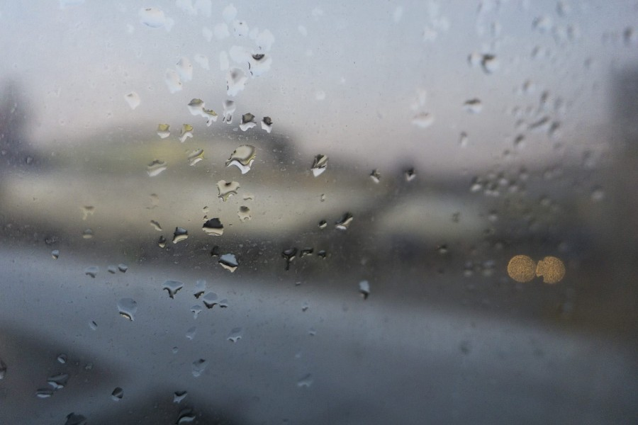

Clouds

- Name: clouds-large.jpg
- Dimensions: 900 x 900
- Weight: 101kb
- Name: clouds-small.jpg
- Dimensions: 400 x 400
- Weight: 28.2kb
Rain

- Name: rain-large.jpg
- Dimensions: 900 x 600
- Weight: 70.6kb
- Name: rain-small.jpg
- Dimensions: 400 x 267
- Weight: 17kb
Clear
- Name: clear-large.jpg
- Dimensions: 900 x 563
- Weight: 102kb
- Name: clear-small.jpg
- Dimensions: 400 x 250
- Weight: 34.2kb
Fog
- Name: fog-large.jpg
- Dimensions: 900 x 506
- Weight: 49.2kb
- Name: fog-small.jpg
- Dimensions: 400 x 225
- Weight: 10.6kb
Snow

- Name: snow-large.jpg
- Dimensions: 600 x 900
- Weight: 101kb
- Name: snow-small.jpg
- Dimensions: 267 x 400
- Weight: 28kb
Wind Pointer

- Name: wind-pointer.png
- Dimensions: 167 x 166
- Weight: 6.6kb